UDN
Search public documentation:
GuiReference
Interested in the Unreal Engine?
Visit the Unreal Technology site.
Looking for jobs and company info?
Check out the Epic games site.
Questions about support via UDN?
Contact the UDN Staff
GUI Reference
Last updated by Michiel Hendriks, some v3323 updates. Previous update by Chris Linder (DemiurgeStudios?), for first draft. Original author was Chris Linder (DemiurgeStudios?).Introduction
The GUI system is flexible toolkit for making menus. It provides tools for laying out buttons, labels, combo boxes, tabs, images, lists, and other basic UI elements in a resolution independent manner. All of the text is independent of the images so menus made with the GUI system can be easily localized. The GUI system also has the advantage of being laid out entirely in default properties so it is fairly easy to change and reorganize. Using GUI does not require the game to be paused so it can also be used for in-game menu overlays though it is not best suited for this. For the most part GUI is well documented so if you have questions about a particular variable or function, checking the source is a good thing to do. This document is designed to give a general overview of how to use GUI, not to go over the details of all variables and functions. The GUI system works by having a GUIController which distributes messages to GUIComponents. GUIController extends BaseGUIController which is an Interaction which is how the controller gets all its input events and also how it can draw to the screen. At the same time, because the controller is based on an interaction, other interactions can disrupt the GUI system by stealing events. Beware particularly of the DefaultPlayerMenu interaction which is defined in <YourGame >.ini under the [Engine.Engine] heading. The type of GUIController you have is also defined in <YourGame>.ini. For the GUI system to work GUIController=GUI.GUIController must be set. If you want an initial menu to appear when you launch the game you can set the InitialMenuClass under the [Engine.GameEngine] heading in <YourGame>.ini. For example:[Engine.GameEngine] InitialMenuClass=GUI.MyMainMenu
GUIController
As mentioned above, GUIController is an Interaction. It implements all the Interaction functions natively and uses these functions to send its own set of events to the current menu. The GUIController is a simple FILO menu stack. You have 3 things you can do. You can open a menu which adds the menu to the top of the stack. You can replace a menu which replaces the current menu with the new menu. And you can close a menu, which returns you to the last menu on the stack. GUIController also provides some useful functions and variables for menu layout and design.OpenMenu
event bool OpenMenu(string NewMenuName, optional string Param1, optional string Param2)
OpenMenu opens the GUIPage with the given class name NewMenuName and puts it on top of the stack as the active menu. If the menu could not be opened, this function returns false. Param1 and Param2 are passed to the new GUIPage in the the HandleParameters function if the menu is created successfully. The PlayOpenSound function in GUIPage is also called. If this GUIPage has bDisconnectOnOpen set to true, any net game will be disconnected.
Note: disconnecting games causes an NotifyLevelChange event to be called. In this case all GUIPages will receive NotifyLevelChange call and will be closed.
ReplaceMenu
event bool ReplaceMenu(string NewMenuName, optional string Param1, optional string Param2)
This functions works much like OpenMenu but unlike OpenMenu this function does not put the new window on top of the stack, instead it replaces the current menu. The other major difference is that even if bDisconnectOnOpen is set to true, any net game will NOT be disconnected. This function will return false, if it does not succeed.
CloseMenu
event bool CloseMenu(optional bool bCanceled)
This function tries to close the top menu. The delegate OnCanClose will be called, if this delegate returns false the menu will not be closed.
When the menu can be closed the close sound for that menu is played, and it is removed from the stack. Control will be given to the menu next on the stack if there is one. If there is not a menu on the stack and the menu just closed does not have bAllowedAsLast, this function will attempt to open GameEngine.MainMenuClass and given control to it. If the there is not a menu on the stack and bAllowedAsLast = true, the GUIController will try to give up control and return focus to the game. If you want to close the menus and return to the game, call CloseAll even there is only one menu open. If bCanceled is false, the current menu will save its setting by calling SaveINI, this is called for all components on the page. CloseMenu only returns false and is considered to have failed if there are no menus on the stack when it is called.
CloseAll
event CloseAll(bool bCancel, optional bool bForced)
CloseAll will close all menus and the GUIController will give up control and the focus will return to the game. If bCanceled is false, the top menu will save its setting by calling SaveINI.
Setting bForced to true will prevent the main menu from being opened.
GetMenuFont
native event GUIFont GetMenuFont(string FontName)
GetMenuFont finds and returns a given GUIFont in the FontStack based on the font's Name. The FontStack is defined in defaultproperties of GUIController. If the font can't be found, NONE is returned.
GetStyle
native event GUIStyles GetStyle(string StyleName)
GetStyle find and returns a style on the StyleStack based on the KeyName of the GUIStyles. If the style can't be found, NONE is returned.
RegisterStyle
function bool RegisterStyle(class StyleClass, optional bool bTemporary)
This allows you to register a new style during runtime. Returns true when the style is registered. If bTemporary is set the style will only exist for the duration of this level, so when a level is changed the style will be purged (see the PurgeObjectReferences function).
GetCurrentRes
native function string GetCurrentRes()
This function returns the current resolution as a string in the format WIDTHxHEIGHT (for example "1024x768").
GetMapList
native function GetMapList(string Prefix, GUIList list)
This function takes a GUIList and fills it with all the maps with the given Prefix. If you want all the maps, simply pass "" as Prefix.
Deprecated since v3323 Use the CacheManager instead.
ResetKeyboard
native function ResetKeyboard()
This function resets all the key bindings to those in the default ini files like Default.ini and DefUser.ini.
MouseEmulation
native function MouseEmulation(bool On)
This seems to turn on joystick emulation for the mouse. Note: I have not tested this. If anyone has used it, drop me a line.
Removed from v3323.
ViewportOwner
var Player ViewportOwner
This is a variable in Interaction but it is worth mentioning here because it allows the GUIController or a GUIPage to have access to the PlayerController, the Level, and Game; for example "ViewportOwner.Actor.Level.Game".
In v3323 use PlayerOwenr() defined in GUIComponent instead to get the PlayerController.
GUIComponent
Almost everything in GUI, from GUIPages to GUIButtons, is built on GUIComponent. This class is well documented and I suggest just looking though it.GUIPage
GUIPage is the basic page out of which menus are built. GUIPage extends GUIMultiComponent which allows it to contain many GUIComponents which are menu tools such as labels, buttons and lists. Besides containing GUIComponents, GUIPages have a Background image, a BackgroundColor and sounds that play when the menu opens and closes. GUIPages can demand to be rendered at 640x480 or greater by setting bRequire640x480 to true which will switch the resolution if it is not already at 640x480 or greater. These are some other variables in GUIPage:| Background | The background image for the menu |
| BackgroundColor | The color of the background |
| BackgroundRStyle | The render style of background |
| bAllowedAsLast | If this is true, closing this page will not bring up the main menu if last on the stack. |
| bCaptureInput | Whether to allow input to be passed to pages lower on the menu stack. |
| bCheckResolution | obsolete |
| bDisconnectOnOpen | Should this menu cause for a disconnect when opened. |
| bPauseIfPossible | This does not do anything. But: should this menu pause the game if possible. |
| bPersistent | If set in defprops, page is kept in memory across open/close/reopen |
| bRenderWorld | this does not do anything |
| bRequire640x480 | Does this menu require at least 640x480 |
| bRestorable | When the GUIController receives a call to CloseAll(), should it reopen this page the next time main is opened? |
| CloseSound | Sound to play when closed |
| InactiveFadeColor | Color Modulation for Inactive Page |
| OpenSound | Sound to play when opened |
OnOpen
delegate OnOpen()
This delegate is called from Opened. This delegate is called by the GUIController.
Pre-v3223 tis delegated is called by the Opened event and the default delegate calls PageLoadINI.
OnClose
delegate OnClose(optional Bool bCancelled)
This delegate is called from Closed. Pre-v3323 the default calls PageSaveINI if bCancelled is false.
OnCanClose
delegate bool OnCanClose(optional Bool bCancelled)
This delegate will be called by the GUIController from CloseMenu. Return false to prevent this menu from closing.
Opened
event Opened(GUIComponent Sender)
This function is called from the GUIController when this GUIPage is opened.
Pre-v3323 Opened calls OnOpen.
Closed
event Closed(GUIComponent Sender, bool bCancelled)
Closed is called from the GUIController when this GUIPage is closed. This function calls OnClose.
PageLoadINI
function PageLoadINI()
Removed from v3323 This function calls LoadINI on all the controls in this page.
PageSaveINI
function PageSaveINI()
Removed from v3323 This function calls SaveINI on all the controls in this page.
PlayOpenSound
function PlayOpenSound()
This function plays OpenSound. It is called from the GUIController when this GUIPage is opened.
PlayCloseSound
function PlayCloseSound()
This function plays CloseSound. It is called from the GUIController when this GUIPage is closed.
InitComponent
function InitComponent(GUIController MyController, GUIComponent MyOwner)
InitComponent is responsible for initializing all components on the page. Pages that subclass GUIPage should override this function to initialize all the components. Make sure to call the super though.
HandleParameters
event HandleParameters(string Param1, string Param2)
This is called from OpenMenu and ReplaceMenu where Param1 and Param2 are optional parameters to both those functions. This gives the ability to pass arguments to your menus when you create them without changing the API. You should subclass this function to take advantage of this functionality.
GUIStyles
GUIStyles is a class that provides support for making different drawing styles for GUIComponents. When the GUIComponent is drawn, the Style variable which is a GUIStyles, is used to draw the component. The style determines the image to draw, the color of the image, how to draw that image, the text to draw, the color of the text, and the font of the test. The style determines each of these things for all five states of the component (Blurry, Watched, Focused, Pressed, and Disabled). This gives a great deal of flexibility for creating whatever sort of look and feel you might want. Below is an example of the same button drawn with two different styles: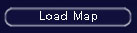
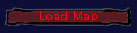
States
As mentioned before there are five states: Blurry, Watched, Focused, Pressed, and Disabled. These are defined in the eMenuState enum in GUI.uc.| MSAT_Blurry | Component has no focus at all. This is the state if the mouse is not over this component nor is it selected. |
| MSAT_Watched | Component is being watched (ie: Mouse is hovering over, etc) |
| MSAT_Focused | Component is Focused (ie: selected). This happens either though using Tab or by the component receiving a mouse down event but the mouse button is no longer being pressed. The mouse being over the component does not affect this state. |
| MSAT_Pressed | Component is being pressed. This is when the component received a mouse down event and the mouse button is still being pressed, even if the mouse is not over this component any more. |
| MSAT_Disabled | Component is disabled |
RStyles
var EMenuRenderStyle RStyles[5]
RStyles determines how the text and image of this component will be rendered. EMenuRenderStyle is and enum defined in GUI.uc. This defaults to MSTY_Normal.
Images
var Material Images[5]
This array holds 1 material for each state (Blurry, Watched, Focused, Pressed, and Disabled). Because these are materials you can have them blink and fade and do very neat things.
ImgStyle
var eImgStyle ImgStyle[5]
ImgStyle determines how each image should be drawn.
ISTY_Normal,
ISTY_Stretched,
ISTY_Scaled,
ISTY_Bound,
ISTY_Justified,
ISTY_PartialScaled,
ISTY_Tiled,
| ISTY_Stretched | This is the default. It corresponds to the DrawTileStretched function in Canvas and will stretch the image to fit the dimensions of the GUIComponent. |
| ISTY_Normal | This draws the image without any scaling or stretching. |
| ISTY_Scaled | This will draw the image scaled to fit the dimensions of the GUIComponent. |
| ISTY_Bound | image doesn't seem to draw |
| ISTY_Justified | Image is drawn within the bounds of the component according to the ImageAlign setting |
| ISTY_PartialScaled | Combination between scaling and stretching. |
| ISTY_Tiled | The image is repeated. |
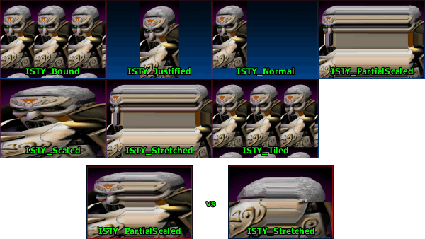
ImgColors
var Color ImgColors[5]
This array holds 1 image color for each state. The image will be modulated (multiplied with the color range (0-255) considered to be from 0.0-1.0) with this color.
FontNames
var string FontNames[5]
Holds the names of the fonts to use for each state.
FontColors
var Color FontColors[5]
This array holds 1 font color for each state.
FontBKColors
var Color FontBKColors[5]
Background colors for the fonts. Used to color the background for selections in lists and popup menus.
BorderOffsets
var int BorderOffsets[4]
BorderOffsets is the border for the text. 0=Left, 1=Top, 2=Right, 3=Bottom.
Controls
Below are some examplea of controls that can be used to design pages and panels with GUI. There are a lot more components available. Check the code of the classes in the XInterface and GUI2K4 package for good examples on how various components can be used.Standard Controls
These are basic controls built on GUIComponent.GUIButton
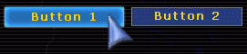
To use buttons you must use the OnClick delegate of GUIComponent. This Delegate is defined as follows:// The mouse was clicked on this control Delegate bool OnClick(GUIComponent Sender);To use this delegate, create a function in your GUIPage that has the same format as the delegate. Below is an example:
function bool ButtonClick(GUIComponent Sender)
{
local GUIButton Selected;
if (GUIButton(Sender) != None)
Selected = GUIButton(Sender);
if (Selected == None) return false;
switch (Selected)
{
case TestButton1:
return Controller.OpenMenu("GUI.MyTest2Page"); break;
case TestButton2:
return Controller.OpenMenu("GUI.MyTestPage"); break;
case QuitButton:
return Controller.OpenMenu("GUI.MyQuitPage"); break;
}
return false;
}
Now in defaultproperties set the OnClick of the button to be the name of the function you created like so:
defaultproperties
{
Begin Object Class=GUIButton Name=cTestButton1
...
OnClick=ButtonClick
...
End Object
TestButton1=cTestButton1
}
GUIListBox
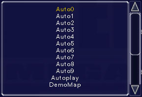
This box will simply display a GUIList. The delegates of GUIListBox pass on the OnClick and OnChange events to the GUIList itself.GUISlider
A GUISlider is a slider between float MinValue and float MaxValue which are specified in defaultproperties. If bIntSlider is true, the slider will have only Int values. You can get the value of the slider by querying float Value; there is not getter function. Two useful functions are:function SetValue(float NewValue) function Adjust(float amount)SetValues sets the current value after doing a range check and a cast to an Int if bIntSlider is true. Adjust moves the slider up or down by the given amount which is treated as a percentage. If amount causes the slider to exceed its min or max, that value will just be clamped.
GUIMenuOption Controls
GUIMenuOption is a wrapper class for GUIComponent. GUIMenuOption contains a GUIComponent ( MyComponent ) and a GUILabel ( MyLabel ) and it takes care of all positioning and scaling between the component and the label. By default the label is left justified in the space available for this component and the control is right justified but this can be changed by altering the defaultproperties of the GUIMenuOption. The text of the label is specified in Caption. The GUIComponent of the GUIMenuOption can be accessed directly through MyComponent but most GUIMenuOptions provide a more direct representation such as MyCheckBox in moCheckBox. GUIMenuOptions often also provide similar accessor functions to the GUIComponent they wrap so it is easy to swap one for the other without changing much code. For example moFloatEdit, the GUIMenuOption wrapper of GUIFloatEdit, both have the SetValue(float V) function. Below I will discuss both the GUIComponent and the GUIMenuOption wrapper for that component together. This is because the two classes serve nearly the same purpose and are used in nearly the same way except for the fact that one has a label.GUICheckBoxButton / moCheckBox
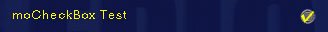
These classes are very simple. Unfortunately, they don't have the same API. GUICheckBoxButton has the function SetChecked(bool bNewChecked) to set the checkedness of the box and to examine the checkedness you just look at bCheckBox. moCheckBox has the function Checked(bool C) to set the checkedness and the function bool IsChecked() to examine the checkedness.GUIComboBox / moComboBox
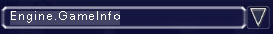
There are two types of combo boxes, GUIComboBox and moComboBox. Both behave in very similar ways. The main function of interest in both of these classes are SetText , GetText, and Find.function SetText(string NewText) function string GetText() function string Find(string Test, bool bExact)SetText will set the current text in the text field of the box to NewText and try to set the item in the pull down list be NewText. If NewText does not exist in the pull down list, the list index will remain unchanged. GetText returns the current text of the combo box. Find returns contents of the combo box that match Test. If bExact is true, the finding will be case sensitive and the return value of Find will equal Test exactly or be an empty string. If bExact is false, Find will return the version in the combo box or an empty string if Test is not found.
GUIEditBox / moEditBox
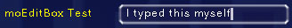
These are boxes that display text and that you can type in if bReadOnly is false. They can be configured to only display numbers but maybe you would want to use a GUIFloatEdit or a GUINumericEdit instead for that. GUIEditBox and moEditBox both have the SetText(string NewText) function. GUIEditBox can inspect the value of TextStr to get the current value of the edit while moEditBox has the string GetText() function.GUIFloatEdit / moFloatEdit
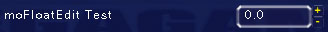
This is an edit for entering floats. The floats can be either left or right justified based on bLeftJustified in GUIFloatEdit. Based on the general pattern we are seeing here both of these classes have setter functions, SetValue(float V), but only moFloatEdit has a getter, float GetValue(). GUIFloatEdit _ must inspect _string Value and cast it to a float.GUINumericEdit / moNumericEdit
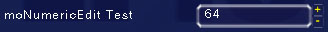
These classes are almost exactly like FloatEdits but with Ints.Laying out Components
The layout of components is done predominantly in defaultproperties. Below is an example:
defaultproperties
{
Begin Object Class=GUIButton Name=cLoadMapButton
Caption="Load Map"
Hint="Loads a map"
OnClick=InternalOnClick
TabOrder=0
bBoundToParent=true
bScaleToParent=true
WinWidth=0.2
WinHeight=0.05
WinLeft=0.031250
WinTop=0.8
End Object
Begin Object Class=GUIButton Name=cCancelMapButton
Caption="Cancel"
Hint="Cancels and closes this window"
OnClick=InternalOnClick
TabOrder=1
bBoundToParent=true
bScaleToParent=true
WinWidth=0.2
WinHeight=0.05
WinLeft=0.26
WinTop=0.8
End Object
LoadMapButton=cLoadMapButton;
CancelMapButton=cCancelMapButton;
Background=Material'GUIMenu.SquareBoxA'
WinWidth=1.000000
WinHeight=0.807813
WinLeft=0.000000
WinTop=55.980499
}
Clearly this is not a complete GUIPage but it illustrates common layout techniques. First we will inspect the creation of the two buttons. Caption is used to set the text of the button. This string can be localized in the following manner (German in this example):
[MyClass] LoadMapButton.Caption="Last Diagramm" CancelMapButton.Caption="L�schen"OnClick is the click delegate which is set to InternalOnClick for both these buttons. For more information on click delegates see GUIButton. Now for the layout information. Layout positions can be given in ratios with 0.0 being the extreme top or left and 1.0 being the extreme bottom or right. These ratios can be given in either screen ratios or parent ratios as the parent does not necessarily take up the whole screen. The parent size is defined by the WinWidth and WinHeight of the GUIPage which are 1.000000 and 0.807813 respectively in the example above. bBoundToParent set to true means that this component uses the parent's bounds for all positioning instead of the window size. This affects WinLeft and WinTop. bScaleToParent set to true means that this component uses the Parent for scaling. The affects WinWidth and WinHeight of the component. Layout positions can also be given in pixels by entering any value > 1.0 even floats such as 1.1. Pixel values are also affected by bBoundToParent and bScaleToParent. As you might have guessed by now WinLeft and WinTop are used to position components. They are the left side and top of the component respectively. WinWidth and WinHeight are the width and height of the component respectively.
Tabs
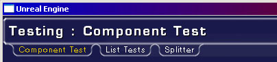
The GUITabControl and GUITitleBar classes can be used to make tabs in the UI. Strictly speaking GUITitleBar does not need to be used to make the tabs but it has support for linking the title bar to the tabs so the tabs are not just floating in space. GUITabControl has a function:
GUITabPanel AddTab(string Caption, string PanelClass,
optional GUITabPanel ExistingPanel,
optional string Hint,
optional bool bForceActive)
which is used to add tabs to the tab control. Caption is the name what will be written on the tab itself. PanelClass is the name of the GUITabPanel class to be spawned. PanelClass will not used if a valid ExistingPanel is passed. Hint is the hint that will be associated with the tab. If bForceActive is true, this new tab will be set to the active tab.
Another important aspect of GUITabControls is the OnChange(GUIComponent Sender) delegate. This delegate is called when tabs change and can, for example, be used to change the caption of the GUITitleBar.
Saving
Saving and the subsequent loading of GUIComponents can take place in two delegate functions of GUIComponent.Delegate OnLoadINI(GUIComponent Sender, string s); Delegate string OnSaveINI(GUIComponent Sender);These delegates are called for all of the controls in a GUIPage but not the page itself. Another way to do saving it to use the SaveConfig function. SaveConfig works by writing to the game ini file the config vars in a config(user) defined class. When this class in next spawned, it will start with these defaults.
Hints
There is a built in mouse over hint system in GUI. All GUIComponents have a localized string Hint which is the hint about how to use that component. In v3323 the hint is shown in a GUIToolTip component. This GUIToolTip will show when the mouse is overing above a component with a hint set. The delegates OnBeginTooltip and OnEndTooltip are called when a tool tip should be opened/closed. Not all components have the ToolTip variable set by default, only the input components (buttons, menuoptions, etc.). Tooltips can be disabled globally by setting thebNoToolTips variable in GUIController .
Pre-v3323 the event ChangeHint(string NewHint) defined in GUIPage is called when there is a new hint. In many cases this will be used to set the text of a text box or a GUITitleBar. Below is an example taken from MyTestPage.uc.
var Automated GUITitleBar TabFooter;
...
event ChangeHint(string NewHint)
{
TabFooter.Caption = NewHint;
}
...
defaultproperties
{
Begin Object class=GUITitleBar name=MyFooter
WinWidth=0.880000
WinHeight=0.055000
WinLeft=0.120000
WinTop=0.942397
bUseTextHeight=false
StyleName="Footer"
Justification=TXTA_Center
End Object
TabHeader=MyHeader
...
}
Context Menus
Another new thing in v3323 are context menus. Every component can have it's own context menu. Context menus are creaed just like any GUIComponent in the defaultproperties.
Begin Object class=GUIContextMenu Name=myContextMenu
ContextItems(0)="Option 1"
ContextItems(1)="Second Option"
ContextItems(2)="Last Option"
OnSelect=ContextMenuOnClick
End Object
ContextMenu=myContextMenu
There's one important thing to think about, the context menu has to be defined in the defaultproperties section of the component that it is going to assigned to.
When a user right-clicks a component with a ContextMenu assigned it will open the ContextMenu. When a ContextMenu item is selected the OnSelect delegate is called:
function cmMatchesOnClick(GUIContextMenu Sender, int ClickIndex)
The ClickIndex is the item that was selected from the context menu.
The context menu can be modified on runtime using the following functions: - AddItem
- InsertItem
- RemoveItemByName
- RemoveItemByIndex
- ReplaceItem